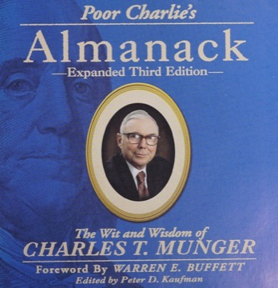

Poor Charlie's Almanack — ตำราความคิดของ Charlie Munger
ถ้า Buffett คือ "หน้าตา" ของ Berkshire Hathaway — Charlie Munger คือ "สถาปนิก" คนที่ดึง Buffett ออกจากการเก็บหุ้นถูกแบบ Graham ไปสู่การซื้อธุรกิจวิเศษแล้วถือยาว Poor Charlie's Almanack คือหนังสือเล่มเดียวที่ Munger ทิ้งไว้ให้เราอย่างเป็นระบบ — รวมสุนทรพจน์ 11 บทที่กลั่นวิธีคิดทั้งชีวิตของเขา ตั้งแต่ mental models ข้ามศาสตร์ การคิดกลับด้าน ไปจนถึงรายการอคติ 25 ข้อที่ทำให้คนฉลาดตัดสินใจโง่
บทนี้เป็นบันทึกการเรียน — สรุป "ใจความสำคัญ" ของหนังสือเพื่อการศึกษา คำคม (quote) คงไว้เป็นภาษาอังกฤษตามต้นฉบับ

หนังสือเล่มนี้คืออะไร — และทำไมต้อง "Poor Charlie"
ชื่อหนังสือคือการคารวะ Poor Richard's Almanack ของ Benjamin Franklin — ฮีโร่ตลอดชีวิตของ Munger ผู้พิสูจน์ว่าคนคนเดียวเก่งได้หลายศาสตร์พร้อมกัน ตัวเล่มรวมชีวประวัติ คำคม ("Mungerisms") และสุนทรพจน์ 11 บทที่ Munger กล่าวระหว่างปี 1986–2007 ตีพิมพ์ครั้งแรกปี 2005 และมีฉบับกระชับโดย Stripe Press ปี 2023 — ออกมาเพียงไม่กี่วันหลัง Munger เสียชีวิตในวัย 99 ปี
เครดิตของ Munger ไม่ใช่แค่ทฤษฎี: partnership ของเขาเอง (1962–1975) ทำผลตอบแทนทบต้น 19.8% ต่อปี เทียบกับ Dow ที่ 5.0% ก่อนจะควบรวมเส้นทางกับ Buffett และนั่งเป็น Vice Chairman ของ Berkshire ตั้งแต่ปี 1978 — Buffett เขียนไว้ในจดหมายผู้ถือหุ้น ฉบับครบ 50 ปี (2014) ว่าสถาปัตยกรรมที่สำคัญที่สุดของ Munger คือ "พิมพ์เขียว" ของ Berkshire วันนี้:
"Forget what you know about buying fair businesses at wonderful prices; instead, buy wonderful businesses at fair prices."
— Warren Buffett ถ่ายทอดคำของ Munger, จดหมายถึงผู้ถือหุ้น 2014
Latticework of Mental Models — อย่าเป็นคนถือค้อน
จาก Talk 2 · A Lesson on Elementary, Worldly Wisdom (USC, 1994)สุนทรพจน์ที่โด่งดังที่สุดในเล่ม Munger เสนอว่าความรู้ที่ใช้งานได้จริงไม่ได้อยู่ในศาสตร์เดียว แต่อยู่ใน "โครงตาข่าย" ของแบบจำลองความคิดจากหลายศาสตร์ที่ถักเข้าหากัน — ใครที่มีเครื่องมือเดียวจะบิดทุกปัญหาให้เข้ากับเครื่องมือนั้นเสมอ:
"To the man with only a hammer, every problem looks like a nail."
— Charlie Munger
Munger บอกว่าแบบจำลองสำคัญมีราว 80–90 ตัว และมันแบก "น้ำหนักเกือบทั้งหมด" ของการเป็นคนคิดเก่ง: ดอกเบี้ยทบต้นกับความน่าจะเป็นจากคณิตศาสตร์, critical mass จากฟิสิกส์, วิวัฒนาการจากชีววิทยา, redundancy กับ breakpoint จากวิศวกรรม, economies of scale จากเศรษฐศาสตร์ และจิตวิทยาของการโน้มน้าว — ปัญหาใหญ่ในชีวิตจริงไม่เคยเคารพเส้นแบ่งคณะวิชา คนที่วิเคราะห์ธุรกิจด้วย P/E อย่างเดียวจึงแพ้คนที่เห็นทั้งระบบ
ความได้เปรียบไม่ได้มาจากรู้ทุกเรื่อง แต่มาจาก "รู้ขอบเขต" ว่าตัวเองรู้อะไรจริงและไม่รู้อะไร Munger ยกคำเพื่อนนักตกปลา: "I like to fish where the fish are." — เลือกบ่อที่เราได้เปรียบ แล้วอยู่ในบ่อนั้น การยอมพูดว่า "เรื่องนี้อยู่นอกวงผม" ไม่ใช่ความอ่อนแอ แต่คือวินัยที่แพงที่สุดในการลงทุน
ขนาดของวงไม่สำคัญเท่ารู้ว่าขอบมันอยู่ตรงไหน — ก่อนซื้อหุ้นสักตัว ลองอธิบายให้ได้ว่า ลูกค้าของธุรกิจนี้คือใคร ทำไมเขาต้องจ่าย และอะไรจะทำให้เขาเลิกจ่าย ถ้าอธิบายไม่ได้โดยไม่เปิดสไลด์ของบริษัท แสดงว่าหุ้นตัวนั้นอยู่นอกวงเรา ต่อให้มันเป็นหุ้นที่ทั้งตลาดกำลังเชียร์ก็ตาม
→ เจาะลึกเลกเชอร์ต้นฉบับทั้ง 90 นาที (pari-mutuel, scale, บทเรียน 6% vs 18%) ได้ใน Munger Talks ตอน 1: A Lesson on Elementary, Worldly Wisdom (USC 1994)
Invert, Always Invert — แก้ปัญหาจากด้านหลัง
จาก Talk 1 · Harvard School Commencement (1986)Munger ยืมคำของนักคณิตศาสตร์ Carl Jacobi — "man muss immer umkehren" (จงกลับด้านเสมอ) — ปัญหายากจำนวนมากแก้ไม่ได้จากด้านหน้า แต่แก้ได้ทันทีเมื่อถามกลับด้าน สุนทรพจน์รับปริญญาที่ Harvard School เป็นตัวอย่างคลาสสิก: แทนที่จะสอนว่า "ทำอย่างไรให้ชีวิตดี" เขาสอน "สูตรการันตีชีวิตพัง" — จงอิจฉา จงขุ่นเคือง จงเป็นคนไม่น่าเชื่อถือ จงเรียนรู้จากประสบการณ์ตัวเองเท่านั้นโดยไม่แยแสบทเรียนของคนอื่น แล้วความทุกข์จะมาเอง
"All I want to know is where I'm going to die, so I'll never go there."
— Charlie Munger
แทนที่จะถาม "ทำอย่างไรให้พอร์ตโต" ให้ถาม "อะไรทำลายพอร์ตแน่นอน" — ซื้อธุรกิจที่ไม่เข้าใจ, ใช้ leverage, วิ่งตามฝูงตอนราคาแพง, ขายตอนตื่นตระหนก — แล้วสร้างระบบที่ทำให้เรา "ไปไม่ถึง" จุดเหล่านั้น การเลี่ยงความโง่ที่ชัดเจน ทำได้ง่ายและให้ผลแน่นอนกว่า การพยายามฉลาดเป็นพิเศษ
สำหรับนักลงทุน inversion มีรูปธรรมที่ตรงที่สุดคือ Kill Conditions — กำหนดตั้งแต่ก่อนซื้อว่า "เหตุการณ์แบบไหนพิสูจน์ว่า thesis เราผิดและต้องขาย" ถ้าตอบคำถามนี้ไม่ได้ แปลว่าเรายังไม่เข้าใจธุรกิจนั้นดีพอที่จะถือมัน การเขียนเงื่อนไขฆ่า thesis ไว้ล่วงหน้า คือการใช้ Jacobi ปกป้องพอร์ตจากตัวเราเองในอนาคต
"It is remarkable how much long-term advantage people like us have gotten by trying to be consistently not stupid, instead of trying to be very intelligent." — ผลตอบแทนระยะยาวส่วนใหญ่ไม่ได้มาจากการเดาถูกบ่อย แต่มาจากการไม่ทำพลาดครั้งใหญ่เลย ตัดความผิดพลาดร้ายแรงออกให้หมดก่อน แล้วค่อยไล่หาความฉลาด
→ สุนทรพจน์ Harvard School ฉบับเต็ม (ใบสั่งยาการันตีชีวิตพังทั้ง 7 ข้อ) อ่านได้ใน Munger Talks ตอน 4: Prescriptions for Guaranteed Misery (1986)
The Psychology of Human Misjudgment — อคติ 25 ข้อ
จาก Talk 11 · ฉบับเขียนขยายใหม่สำหรับหนังสือ (2005)บทที่ยาวและมีค่าที่สุดในเล่ม — Munger ไล่รายการแนวโน้มทางจิตวิทยา 25 ข้อที่ทำให้มนุษย์ (รวมถึงคนฉลาดจัดๆ) ตัดสินใจพลาดอย่างเป็นระบบ เขาสร้างรายการนี้เองจากการอ่านและสังเกต หลายสิบปี ก่อนที่ behavioral economics จะกลายเป็นวิชากระแสหลักเสียอีก สี่ข้อที่ "แพง" ที่สุดสำหรับนักลงทุน:
ข้อแรกและข้อที่ Munger ให้น้ำหนักมากที่สุด: "Never, ever, think about something else when you should be thinking about the power of incentives." ตัวอย่างในเล่มคือ FedEx ที่แก้ปัญหากะกลางคืนล่าช้าไม่สำเร็จด้วยวิธีใดเลย จนเปลี่ยนจากจ่ายรายชั่วโมงเป็นจ่ายต่อกะ (เสร็จแล้วกลับบ้านได้) — ปัญหาหายทันที สำหรับนักลงทุน: ก่อนเชื่อบทวิเคราะห์หรือคำพูด CEO ให้ถามก่อนว่าคนพูด "ถูกจ่ายเงินจากอะไร" และเปิด proxy statement ดูว่าโบนัสผู้บริหาร ผูกกับ metric ไหน — บริษัทจะวิ่งไปทางนั้นเสมอ ไม่ใช่ทางที่สไลด์บอก
มนุษย์ใช้พฤติกรรมของคนรอบตัวเป็นทางลัดตัดสินใจ โดยเฉพาะตอนสับสนหรือเครียด — ซึ่งคือสภาพจิตของตลาดช่วงฟองสบู่และช่วงแพนิกพอดี การเห็นคนอื่นกำไรง่ายๆ คือแรงกดดันทางจิตวิทยาที่หนักที่สุดในการลงทุน เพราะมันไม่ได้มาในรูปความโลภ แต่มาในรูป "ความกลัวตกขบวน"
สมองเกลียดการเปลี่ยนความเชื่อที่ประกาศไปแล้ว — ยิ่งเราเล่า thesis หุ้นตัวหนึ่ง ให้คนอื่นฟังบ่อยเท่าไหร่ เรายิ่งมองไม่เห็นหลักฐานที่ขัดกับมัน ทางแก้ของ Munger คือบังคับตัวเองพิจารณาฝั่งตรงข้ามอย่างจริงจัง: "I never allow myself to have an opinion on anything that I don't know the other side's argument better than they do."
ความเจ็บจากการ "เสีย" รุนแรงกว่าความสุขจากการ "ได้" ขนาดเท่ากันหลายเท่า — นี่คือรากของพฤติกรรมถัวหุ้นแพ้ไปเรื่อยๆ และการถือหุ้นที่ thesis ตายแล้วเพียงเพราะ "ขายตอนนี้เท่ากับยอมรับว่าขาดทุน" ตลาดไม่สนต้นทุนของเรา — ราคาที่ซื้อมา เป็นข้อมูลที่ irrelevant ที่สุดในการตัดสินใจว่าควรถือต่อหรือไม่
อคติพวกนี้อ่านแล้วพยักหน้าง่าย แต่ใช้จริงยาก เพราะมันทำงาน "ใต้" ความรู้สึกตัวเสมอ Munger จึงเสนอทางเดียวที่ได้ผล: เปลี่ยนมันเป็น checklist ที่ไล่ทีละข้อก่อนตัดสินใจใหญ่ โดยเฉพาะตอนตลาดสุดขั้ว — จุดที่เรา "มั่นใจที่สุด" คือจุดที่ควรไล่ checklist ละเอียดที่สุด
→ เวอร์ชันเลกเชอร์สดปี 1995 ที่ Harvard (FedEx, Tupperware, การทดลองสวนสัตว์ และ two-track analysis) อ่านได้ใน Munger Talks ตอน 3: The Psychology of Human Misjudgment (Harvard 1995)
Lollapalooza Effect — เมื่ออคติหลายตัวรุมพร้อมกัน
คำที่ Munger ประดิษฐ์เองและกลายเป็นมรดกทางภาษาของเขา: เมื่อแนวโน้มทางจิตวิทยาหลายตัว ทำงาน "ทิศทางเดียวกันพร้อมกัน" ผลลัพธ์ไม่ใช่การบวกกัน แต่เป็นการคูณ — ระเบิดพฤติกรรมที่ใหญ่กว่าผลรวมของส่วนประกอบมาก ตัวอย่างในเล่ม: งานขาย Tupperware (ความชอบส่วนตัว + บุญคุณ + social proof + คำมั่นที่พูดต่อหน้าคนอื่น ทำงานพร้อมกัน) และการประมูลแบบเปิด ที่ดึงคนฉลาดให้จ่ายแพงเกินเหตุครั้งแล้วครั้งเล่า
ฟองสบู่และวิกฤตตลาดทุกครั้งคือ lollapalooza: ความโลภ + social proof + ความอิจฉา + แรงจูงใจของคนกลางที่ได้ค่าธรรมเนียมจากการเชียร์ — ทั้งหมดเสริมกันจนราคาหลุดจากมูลค่าไปไกล แต่ Munger ชี้ว่ากลไกเดียวกันทำงาน "ฝั่งบวก" ได้ด้วย: ใน Talk 4 เขาแสดงวิธีคิดว่าธุรกิจอย่าง Coca-Cola ทบต้นจากศูนย์เป็นระดับล้านล้านดอลลาร์ได้อย่างไร — แบรนด์ที่ผูกกับ conditioned reflex, ขนาดที่กดต้นทุน และการกระจายที่ไปทุกที่ เสริมกันเป็น lollapalooza ของ moat
ธุรกิจวิเศษจริงมักไม่ได้มี moat เดียว แต่มีหลาย moat ที่เสริมกัน — แบรนด์ + switching cost + scale ที่หมุนเข้าหากันจนคู่แข่งไม่รู้จะเริ่มตีตรงไหน เวลาวิเคราะห์หุ้น อย่าถามแค่ "มีคูเมืองไหม" ให้ถามว่า "คูเมืองแต่ละชั้นเสริมกันหรือไม่" และกลับด้าน: ความผิดพลาดที่ทำลายพอร์ตจริงๆ ก็มักเป็น lollapalooza ของอคติหลายตัวเช่นกัน
การลงทุนแบบ Munger — เดิมพันน้อยครั้ง แต่หนัก แล้วนั่งรอ
"A great business at a fair price is superior to a fair business at a great price."
— Charlie Munger
นี่คือประโยคที่เปลี่ยน Berkshire — หลักฐานชิ้นแรกคือ See's Candies ปี 1972: Munger ผลัก Buffett ให้ยอมจ่าย $25 ล้าน (ราว 3 เท่าของ book value — แพงเกินตำรา Graham มาก) สำหรับธุรกิจขนมที่มีอำนาจตั้งราคาเหนือใจลูกค้า ผลลัพธ์: ถึงจดหมายผู้ถือหุ้นปี 2014 Buffett รายงานว่า See's ทำกำไรก่อนภาษีสะสมไปแล้ว ~$1,900 ล้าน โดยแทบไม่ต้องลงทุนเพิ่ม — เงินสดที่ไหลออกมากลายเป็นทุน ให้ Berkshire ไปซื้อธุรกิจอื่นต่อเป็นทอดๆ บทเรียนราคา $25 ล้านที่ให้ผลตอบแทนเป็นวิธีคิดทั้งระบบ
โอกาสที่ทั้ง "เข้าใจได้ ราคาดี และธุรกิจวิเศษ" มาไม่บ่อย — Munger จึงเสนอสไตล์ที่ตรงข้าม กับ Wall Street ทั้งกระดาน: เตรียมตัวหนักมาก เดิมพันน้อยครั้ง แต่เมื่อโอกาสชัดให้เดิมพันหนัก แล้วถือยาวโดยไม่ขยับ ("wait for the fat pitch") การซื้อขายถี่มีต้นทุนสามชั้น — ค่าธรรมเนียม ภาษี และโอกาสตัดสินใจพลาดที่เพิ่มตามจำนวนการตัดสินใจ
"The big money is not in the buying and the selling, but in the waiting."
— Charlie Munger
พอร์ตกระจุกในธุรกิจไม่กี่ตัวที่เข้าใจลึกจริง ไม่ได้เสี่ยงกว่าพอร์ตกระจาย 50 ตัว ที่ไม่เข้าใจสักตัว — ความเสี่ยงที่แท้จริงคือการไม่รู้ว่าตัวเองถืออะไรอยู่ เงื่อนไขเดียวของสไตล์นี้คือความอดทนต้องมาพร้อมความเข้มงวด: รอได้เป็นปีเพื่อราคาที่ใช่ และขายทันทีเมื่อ kill condition ทำงาน
วิธีอ่านเล่มนี้
หนังสือเล่มนี้ไม่ต้องอ่านเรียงหน้า — แต่ละ talk จบในตัว และหลาย talk พูดเรื่องเดียวกัน จากคนละมุม (Munger เรียกว่าการตอกซ้ำอย่างตั้งใจ) ลำดับที่แนะนำ:
ลำดับการอ่านที่แนะนำ
Munger ปิดชีวิตด้วยกฎที่เรียบง่ายที่สุดในเล่ม: "Spend each day trying to be a little wiser than you were when you woke up." — ความรู้ทบต้นได้เหมือนเงิน และหนังสือเล่มนี้ คือเงินต้นก้อนใหญ่ที่สุดก้อนหนึ่งที่หาได้ในราคาปกหนังสือ